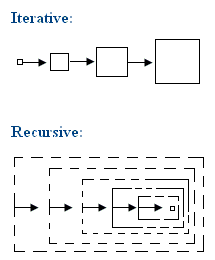
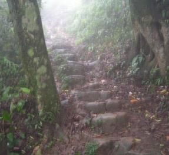

Iterative Method
程度★ 難度★★★
道生一，一生二，二生三，三生萬物。《老子》
Iterative Method
「疊代法」是把求得的數值，不斷重覆代入，再求得新數值的方法。
疊代法會有無窮無盡的情況，例如微積分所學的牛頓法，遇到曲線時，小數位數是越算越多。又例如以試除法建立質數，質數是越建越多。
寫程式時經常以迴圈來實作疊代法。因為迴圈事實上也可以用遞迴來完成，所以讀者也可以利用遞迴來實作，只不過我想大家沒必要這麼累。
UVa 997
範例：秦九韶演算法（Horner's Rule）
給定一個x後，一乘一加不斷更迭，求得多項式的值。完全不需要次方運算。
a * x^n + b * x^(n-1) + c * x^(n-2) + ... = ((((a * x) + b) * x) + c) * x) + ...
UVa 498 10268
範例：3n+1猜想（Collatz Conjecture）
至今尚未有人能證明其正確性。有趣的是，目前也尚未檢查出任何反例。
猜想的內容是這樣的：有一個整數，如果是偶數，就除以2；如果是奇數，就乘以3再加1。一個整數不斷這樣操作下去，最後一定會變成1。這個操作的過程就是一種疊代。
UVa 100 371 694
範例：牛頓法（Newton's Method）
一個經典的疊代法範例，微積分課程一定都有教過。牛頓法用來求連續函數的其中一個根。一開始先隨便設定一點，然後不斷利用斜率，疊代求出下一點。
Xn+1 = Xn - f(Xn) / f'(Xn)
範例：以試除法建立質數
從表面上來看是窮舉法，窮舉正整數一一試驗是否為質數，然後窮舉所有已知質數一一試除正整數，以找出正確的質數。
但是從另一個角度來看，利用已求得的質數，求出更多質數，其實就是疊代法。
延伸閱讀：數學歸納法（Mathematical Induction）
數學歸納法的第二步驟，就是證明可不可以疊代！第二步驟的證明過程中一定會用到疊代！
1. 先證明 n = 1 成立。（有時候不見得要從1開始。） 2. 假設 n = k 成立，證明 n = k+1 也會成立。 當 1. 2. 得證，就表示 n = 1 ... ∞ 全部都成立。
Recursive Method
程度★ 難度★★★
易有太極，是生兩儀。兩儀生四象，四象生八卦。《易傳》
Recursive Method
「遞迴法」是重複用相同手段來縮減問題範圍的方法。
遞迴法會有無窮無盡的情況，例如碎形是越分越細緻。
寫程式時主要以遞迴來實作。因為遞迴也可以用stack和迴圈來完成，所以讀者也可以利用迴圈來實作，只不過我想大家沒必要這麼累。
UVa 10994 10212 10471 10922
範例：碎形（Fractal）
碎形是一個經典的Recursive Method範例。
UVa 177
比較Iterative Method與Recursive Method
疊代法以確定的部分作為起始點，循序漸進推演，最後求得答案。
遞迴法找出一套縮小問題範疇的規律，以此規律不斷縮小問題，直到能釐清細節，找到確定的部份。
疊代法與遞迴法恰好顛倒：疊代法是針對已知，逐步累積，直至周全；遞迴法是針對未知，反覆拆解，直至精細。
範例：秦九韶演算法（Horner's Rule）
若疊代、遞迴是有窮有盡的時候，疊代、遞迴是一體兩面，同時存在。
a * x^2 + b * x^1 + c
Iterative Method:
{a} * x^2 + b * x^1 + c
{a, *x} * x^1 + b * x^1 + c
{a, *x, +b} * x^1 + c
{a, *x, +b, *x} + c
{a, *x, +b, *x, +c}
Recursive Method:
{a * x^2 + b * x^1 + c}
{a * x^2 + b * x^1}, +c
{a * x^1 + b}, *x, +c
{a * x^1}, +b, *x, +c
{a}, *x, +b, *x, +c
疊代法是不斷配x，擴增已知；遞迴法是不斷提x，減少未知。
雖然疊代法與遞迴法的推理方向是相反的，但是疊代法與遞迴法的計算方向是一樣的，兩者都是由小範圍算到大範圍，最後求得正確答案。
Iterative Method: a, *x, +b, *x, +c Recursive Method: a, *x, +b, *x, +c
範例：Gray Code
Iterative Method: GrayCode(n-1)的每個數字，最高位數加一個0。 GrayCode(n-1)的每個數字，高位數與低位數整個顛倒，然後在最高位數加一個1。 兩者銜接起來就是GrayCode(n)。 Recursive Method: GrayCode(n)的每個數字，分成兩類。 第一類最高位數是0，把最高位數拿掉後，即形成GrayCode(n-1)。 第二類最高位數是1，把最高位數拿掉後，即形成GrayCode(n-1)。
也可以用最低位數為主，進行疊代、遞迴，生成順序不同的Gray Code。Gray Code具有循環的特性，有多種疊代、遞迴方式，不分正向與逆向。
Stairs Climbing
程度★ 難度★★★
爬樓梯
這裡介紹一個知名的爬樓梯問題：眼前有五階樓梯，每次可踏上一階或踏上兩階，那麼爬完五階共有幾種踏法？例如(1,1,1,1,1)是其中一種踏法，(1,2,1,1)是另一種不同的踏法。
Iterative Method
我們先試著只爬少少的幾階樓梯，觀察一下踏法。
爬完一階的踏法很明顯的只有一種：(1)。
至於爬完兩階的踏法有兩種：(1,1)和(2)。
至於爬完三階的踏法：因為一次只能往上踏一階或兩階，所以只可能從第一階或從第二階踏上第三階。只要將(爬完一階的踏法,2)，再綜合(爬完兩階的踏法,1)，就是爬完三階的踏法。
同理，只要將(爬完兩階的踏法,2)，再綜合(爬完三階的踏法,1)，就是爬完四階的踏法。
疊代下去，就可求出爬完五階的踏法種類。
爬完一階 (1) 爬完兩階 (1,1) (2) 爬完三階，即是(爬完一階,2)與(爬完二階,1) (1,2) (1,1,1) (2,1) 爬完四階，即是(爬完二階,2)與(爬完三階,1) (1,1,2) (2,2) (1,2,1) (1,1,1,1) (2,1,1) 爬完五階，即是(爬完三階,2)與(爬完四階,1) (1,2,2) (1,1,1,2) (2,1,2) (1,1,2,1) (2,2,1) (1,2,1,1) (1,1,1,1,1) (2,1,1,1)
至於踏法種類數目，則是以相加方式求得。
Recursive Method
我們由踏出的最後一步開始分析。
要「爬完五階」，最後一步一定是踏上第五階。要踏上第五階，只可能從第四階和第三階踏過來，也就是(爬完四階的踏法,1)，再綜合(爬完三階的踏法,2)。
但是我們不知道如何「爬完四階」和「爬完三階」，所以只好再分別研究「爬完四階」與「爬完三階」，反正它們一定又是由更之前的樓梯踏過來。只要不斷追究下去，問題必會漸漸簡單明朗，總有一天會撥雲見日。
追究到「爬完一階」與「爬完兩階」的時候，已經可以確認答案了。現在「爬完五階」的踏法種類也就清楚了！
爬完五階，即是(爬完四階,1)與(爬完三階,2) 爬完四階，即是(爬完三階,1)與(爬完二階,2) 爬完三階，即是(爬完二階,1)與(爬完一階,2) 爬完兩階：(2) (1,1) 爬完一階：(1)
雙向都可以疊代
前面是採用上樓梯的方式進行疊代，由第一階開始疊代到第五階。其實我們也可以採用下樓梯的方式進行疊代，我們從第五階開始分析，先求出「降到四階」、「降到三階」的踏法，然後就可以疊代出「降到平面」的踏法了。如此也能求出爬完五階的各種踏法。
降到四階 (1) 降到三階 (1,1) (2) 降到二階，即是(2,降到四階)與(1,降到三階) (2,1) (1,1,1) (1,2) 降到一階，即是(2,降到三階)與(1,降到二階) (2,1,1) (2,2) (1,2,1) (1,1,1,1) (1,1,2) 降到平面，即是(2,降到二階)與(1,降到一階) (2,2,1) (2,1,1,1) (2,1,2) (1,2,1,1) (1,2,2) (1,1,2,1) (1,1,1,1,1) (1,1,1,2)
有一些問題是可以雙向疊代的，例如此處的爬樓梯問題。當一個問題可以雙向疊代的時候，通常我們會將數值由小到大的方向稱為「正向」或「順向」（forward），數值由大到小的方向稱為「反向」或「逆向」（backward）。
雙向都可以遞迴
若疊代法、遞迴法是有窮有盡的時候，疊代與遞迴一體兩面、同時存在。既然雙向都可以疊代，當然也代表雙向都可以遞迴，正向疊代對應逆向遞迴，逆向疊代對應正向遞迴。